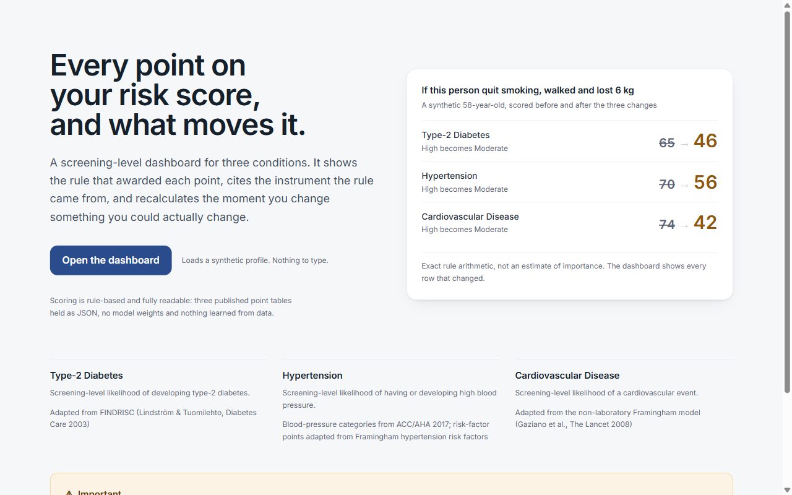
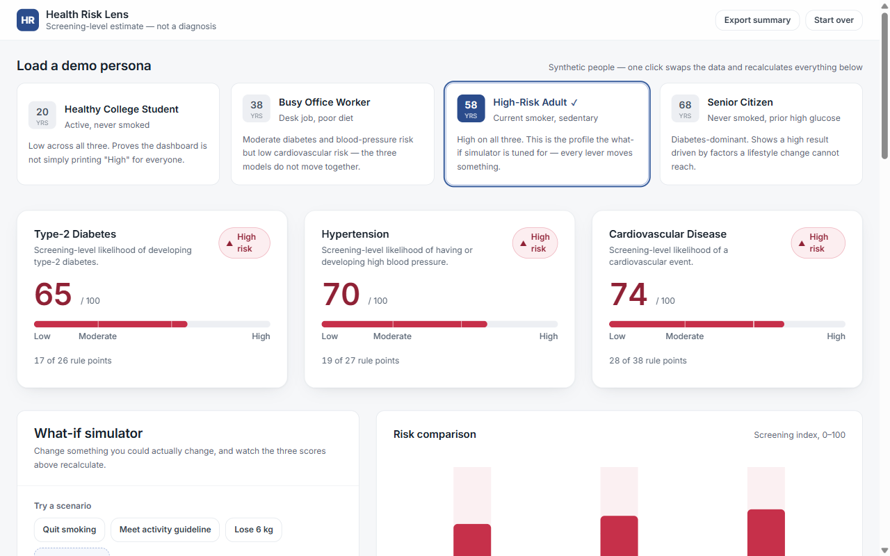
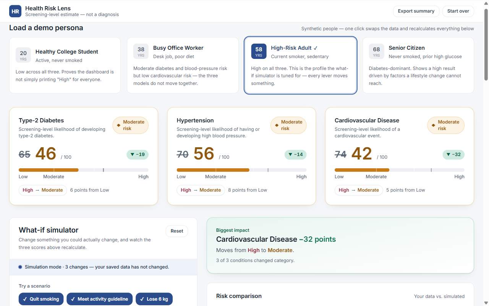
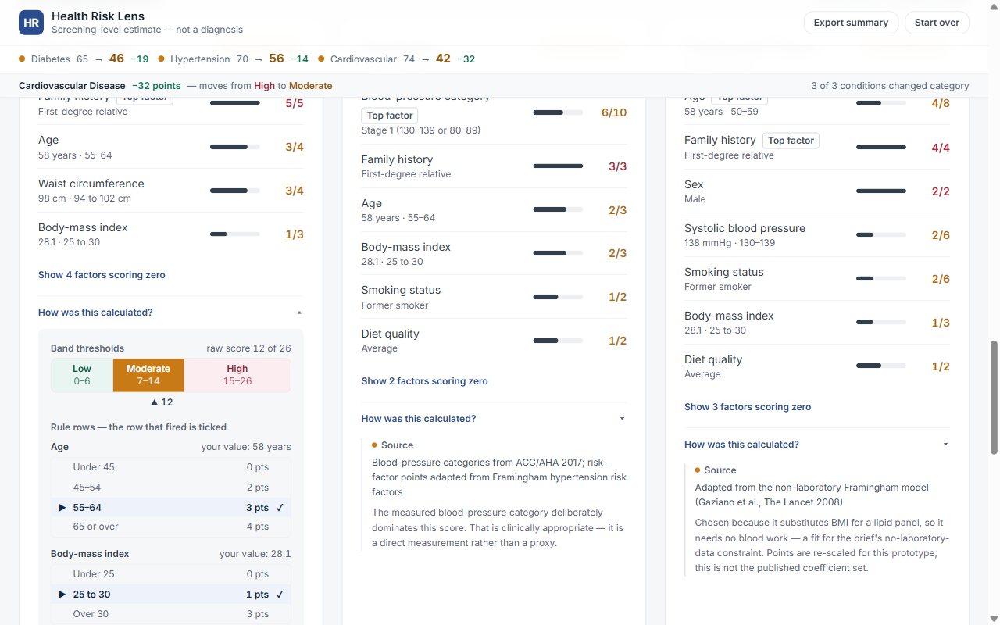
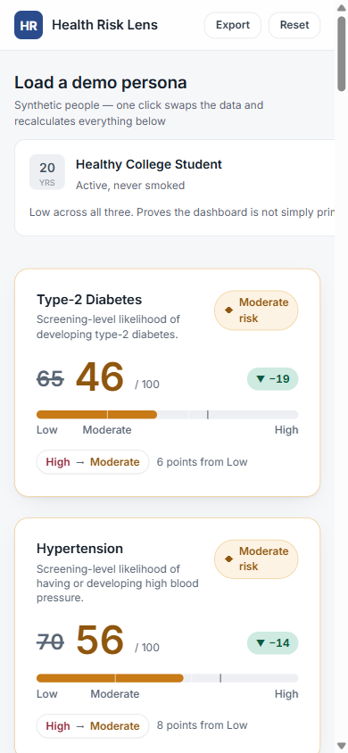

Project Report
An explainable, rule-based screening dashboard that estimates risk for three chronic conditions, accounts for every point it awards, and simulates the effect of a change in behaviour.
| Brief | Personalised Health-Risk Dashboard (problem statement #3) |
|---|---|
| Submitted by | |
| Document version | 1.0 |
| Date | 10 September 2026 |
| Implementation | Single-page web application · 3,755 lines · 13 UI components · no backend |
| Status | Feature-complete; 525 scoring assertions and a server-render smoke test passing |
Chronic conditions such as type-2 diabetes, hypertension and cardiovascular disease develop over years and are substantially driven by modifiable factors — weight, physical activity, smoking and diet. Validated screening instruments for all three have existed in the clinical literature for two decades. The gap is not the mathematics; it is access and comprehension. The instruments live in journal appendices and clinical software, and a person who wants to understand their own standing has little between a full clinical consultation and an unsourced internet quiz.
Two failures are common in the tools that try to close that gap. The first is opacity: a tool returns "your risk is high" with no account of which inputs produced the result or how strongly, which makes the number impossible to trust and impossible to act on. The second is fatalism: a tool reports a static figure without showing that the figure responds to change, so a user with an elevated result learns only that they should be worried.
A third problem is specific to machine-learned health tools. A model trained on population data can be accurate in aggregate while being unable to explain any individual prediction, and in a clinical context an unexplainable output is difficult to act on, difficult to audit, and difficult to defend.
The problem this project addresses is therefore threefold:
Health Risk Lens is a single-page web application that scores three conditions independently from thirteen items of basic health and lifestyle information, explains each score down to the individual rule row, and provides a simulator that recalculates all three scores in real time as modifiable factors are adjusted.
The design rests on three decisions, each taken deliberately against a more conventional alternative.
Scoring is performed by three point tables held as JSON and adapted from published instruments. There is no model, no training data and no inference. This is a deliberate trade: the system gives up any possibility of learning population-specific patterns in exchange for an explanation that is exact rather than approximate. When the application states that family history contributed five points, that is not an estimate of feature importance — it is the arithmetic, and the rule row that produced it can be displayed alongside.
The three conditions are scored by three separate instruments with different factors, different weights and different cut-points. They are deliberately not normalised onto a shared scale, and the interface draws each condition's own band boundaries rather than a tidy shared split. A single blended "health score" would have been simpler to present and would have misrepresented every instrument it averaged.
Scoring is a pure function of a plain profile object. Simulation therefore requires no additional scoring logic: it is the identical function applied to a patched copy of the profile. Because both results come from the same point tables, the difference between them is the literal arithmetic, and the explanation of a simulated change cannot drift from the change itself.
Design constraint honoured throughout. The application is screening-level and educational. It does not diagnose, it recommends no treatment or medicine, and every disclaimer is persistent rather than a dismissible modal.
| Feature | Description |
|---|---|
| Three independent risk estimates | Type-2 diabetes, hypertension and cardiovascular disease, each scored by its own instrument and returning its own Low / Moderate / High band. |
| Four demo personas | One click replaces the whole profile and recalculates every score, chart and explanation on screen. |
| Health and lifestyle data entry | Thirteen fields with live derivation of BMI, waist circumference and blood-pressure category. |
| Instant recalculation | No submit button and no debounce; scoring is a few dozen table lookups per keystroke. |
| What-if simulator | Four modifiable levers plus three one-click scenarios; the original profile is never mutated. |
| Contributing-factor breakdown | Every factor that scored, its value, the points it awarded and the maximum it could have awarded, ranked, with the top factor flagged. |
| Data provenance drawer | Band thresholds drawn to scale and the complete rule table for every factor, with the row that fired ticked. |
| Comparison chart | The three results side by side, each column carrying its own band boundaries as background zones. |
| Simulation attribution | A row-by-row account of which rules changed, from what to what, and the resulting point delta per condition. |
| PDF export | A consultation-style summary document produced from a dedicated print component. |
| Accessibility provisions | Every band pairs colour with a glyph and a word; tabular figures prevent layout shift; sliders are keyboard-operable; reduced-motion preference is respected. |
The application has no backend, no database, no network calls, no router and no state-management library. It is a single-page React application in which the rule tables are static JSON and all scoring is synchronous. This is an architectural choice with a specific benefit: a demonstration with no server dependency cannot fail because of connectivity, and the entire computation is inspectable in the browser.
State consists of exactly two values held in the dashboard: the profile object and a
sparse overrides patch. Everything else is derived on each render.
Because overrides is held separately and applied to a copy, the user's own data is
never mutated. "Reset to my data" is not a re-fetch or an undo stack; it is the assignment of an
empty patch.
A single generic evaluator, scoreCondition.js, scores all three conditions. The
difference between diabetes, hypertension and cardiovascular disease lives entirely in JSON: each
rule file declares its factors, the rows each factor can match, the points each row awards, the
band thresholds and the source citation. Adding a fourth condition requires a fourth JSON file and
no new scoring code.
Bands are computed from the raw point total and never from the 0–100 display index, so the number shown on screen and the category beside it cannot disagree because of rounding.
The project carries two executable checks rather than a conventional unit-test suite, both plain Node scripts with no test-framework dependency:
npm run verify — 525 assertions covering derived metrics and
their guards, band boundaries including the exact BMI values 25.0 and 30.0, all four personas
and their metadata, every step of the demonstration sequence, override hygiene (no-op
overrides are dropped and the profile is never mutated), the simulation summary including
changes that make results worse and the empty difference, and the provenance invariants
described in section 9.npm run smoke — server-renders both pages and six simulation scenarios: no
overrides, a single change, the full sequence, a change that worsens the result, a no-op
override, and an already-low profile. It fails if any component throws.| Layer | Technology | Rationale |
|---|---|---|
| UI framework | React 18.3 | Component model suits a screen where one state change must propagate to a dozen coordinated views. |
| Build tooling | Vite 6.0 | Fast development server and an optimised production build with no configuration overhead. |
| Styling | Tailwind CSS 3.4 | A token layer defined once in configuration — a four-step type scale, a spacing scale, three elevation tiers and a clinical palette — applied consistently across every component. |
| Charting | Recharts 2.13 | Declarative SVG charting; custom background shapes allow each column to carry its own band thresholds. |
| Scoring | Plain JavaScript and JSON | No library. The rule tables are the domain model and are meant to be opened and read. |
| PDF generation | Browser print pipeline | Zero dependencies and true vector output; see section 10. |
| Verification | Node scripts | 525 assertions and a server-render smoke test without a test-framework dependency. |
The full production dependency list is three packages: react,
react-dom and recharts. Everything else is a build-time tool.
All three instruments are adapted from published sources, and every adaptation is stated in the interface itself rather than only in documentation.
| Condition | Basis | Max | Low | Moderate | High |
|---|---|---|---|---|---|
| Type-2 diabetes | FINDRISC — Lindström & Tuomilehto, Diabetes Care, 2003 | 26 | 0–6 | 7–14 | 15–26 |
| Hypertension | ACC/AHA 2017 blood-pressure categories with Framingham risk factors | 27 | 0–7 | 8–15 | 16–27 |
| Cardiovascular disease | Non-laboratory Framingham — Gaziano et al., The Lancet, 2008 | 38 | 0–11 | 12–22 | 23–38 |
A High diabetes result contributes three points to the cardiovascular score, because type-2 diabetes is itself an established cardiovascular risk factor. This makes the evaluation order load-bearing: diabetes is scored before cardiovascular disease. The coupling is non-circular by construction — cardiovascular risk never feeds back into the diabetes score — and it is surfaced in the interface as a labelled contributing factor rather than hidden inside the arithmetic.
The three sets of thresholds are deliberately not forced onto identical cut-points. Each condition draws its own band boundaries wherever it is displayed. Normalising them would have produced a tidier chart and a less accurate one.
Four synthetic profiles ship with the application. The set is chosen so that the three models visibly disagree with one another: if every persona returned the same band across all three conditions, an observer could reasonably suspect a single hidden score presented three times. All four are verified by the assertion suite.
| Persona | Profile | Diabetes | Hypertension | Cardiovascular |
|---|---|---|---|---|
| Healthy College Student | 20 F · BMI 21.8 · never smoked · 120 min/week | 8 Low | 7 Low | 5 Low |
| Busy Office Worker | 38 M · BMI 28.4 · desk job · poor diet | 38 Moderate | 44 Moderate | 24 Low |
| High-Risk Adult | 58 M · BMI 30.1 · current smoker · sedentary | 65 High | 70 High | 74 High |
| Senior Citizen | 68 F · BMI 31.6 · prior high glucose | 92 High | 56 Moderate | 53 Moderate |
The office worker is the informative case: Moderate for diabetes and blood pressure but Low for cardiovascular risk, because he is young and has never smoked. The senior citizen is the complementary case — a high result driven largely by age and a previously recorded high glucose reading, neither of which any lifestyle change can alter.
The simulator is the feature the application is designed around. It exposes four levers — smoking status, weight, physical activity and fruit and vegetable intake — plus three one-click scenarios and a combined "apply all three". Systolic blood pressure is available under an Advanced disclosure, labelled as an outcome measure rather than a lever.
Age, sex, family history and previously recorded high blood glucose are displayed locked. They contribute to the score, but no lifestyle change alters them, and a simulator that let a user pretend to be thirty years younger would be a toy. Showing them as fixed is part of the argument the tool is making.
The high-risk persona is numerically frozen so that the following sequence is reproducible. It is asserted step by step by the verification suite.
| Step | Diabetes | Hypertension | Cardiovascular |
|---|---|---|---|
| Starting profile | 65 High | 70 High | 74 High |
| Quit smoking | 65 — no change | 67 High | 63 High |
| + 150 min/week activity | 58 High | 59 High | 55 → Moderate |
| + lose 6 kg | 46 → Moderate | 56 → Moderate | 42 Moderate |
The first step is deliberately included: smoking does not feed the diabetes model, so the diabetes card reports "no change to this risk" and explains why. A tool that moved every number whenever any input changed would be easier to demonstrate and would be lying. The third step crosses the two remaining band boundaries and simultaneously switches off the diabetes-to-cardiovascular coupling described in section 6.2.
Each contributing-factors card carries a "How was this calculated?" disclosure containing three things:
The rule rows are emitted by the scoring engine itself as part of each contribution record, not recomputed by the interface. The drawer is therefore a pure renderer: it has no independent arithmetic and cannot drift from the score displayed above it.
This property is asserted rather than assumed. For all 104 factor evaluations across every persona, the verification suite checks that exactly one row is active and that the active row's points equal the score that factor contributed. The reasoning behind this test is simple: a provenance drawer that quietly disagreed with its own scoring engine would look, to any observer, exactly like a correct one.
When the simulator is active, the interface additionally presents a row-level attribution of the
difference — for example smoking 6 → 2, −4. Because both the current and simulated
results are produced by the same point tables, this difference is the literal arithmetic and not an
approximation of feature importance. The verification suite asserts that the per-factor deltas sum
exactly to the reported score delta.
The "Export summary" action produces a consultation-style document containing a masthead, a profile table, a results table, the simulated changes when the simulator is active, and the disclaimer. It is a purpose-built component rendered for paper — not the dashboard with pieces hidden by a print stylesheet.
The implementation invokes the browser's own print pipeline against that component. This was
chosen over html2canvas/html2pdf and jsPDF deliberately, for
two reasons. First, it adds zero dependencies. Second, the output is real vector
text — sharp at any zoom, selectable, searchable, and tens of kilobytes rather than a multi-megabyte
rasterised screenshot. A canvas-based approach would additionally have mishandled the gradient
callout, the translucent header and the sticky results strip.
Known limitation. Because this uses the browser print dialog, the user selects "Save as PDF" — two interactions rather than a silent download. A library such as jsPDF is the upgrade path if a true one-click download is required, at the cost of the dependency and the vector-text quality.





The following extensions are ordered by the ratio of value to architectural disruption. The first group requires no change to the existing design.
Deliberately not planned. Replacing the rule tables with a trained model. It would make the explainability guarantees in section 9 impossible to maintain, and those guarantees are the point of the project.
Health Risk Lens demonstrates that a health-risk tool can be simultaneously useful and completely accountable. Every number it displays can be traced to a rule row, that row to a point table, and that table to a published instrument — and the interface exposes that chain to the user rather than documenting it elsewhere.
The central technical decision was to make scoring a pure function of a plain profile object. That one choice produced the simulator at almost no additional cost, guaranteed that the explanation of a change is the arithmetic of the change rather than an approximation of it, and made the whole system verifiable by ordinary assertions — 525 of them, including the invariant that the provenance drawer must agree with the engine that produced its data.
The project's principal limitation is stated plainly rather than minimised: the instruments are adaptations, the cardiovascular point set is re-scaled and not the published coefficients, and no result has been validated against outcome data. The application is a screening-level educational tool. It does not diagnose, it recommends no treatment, and it directs the user to a qualified healthcare professional. Within those boundaries it does something the opaque alternatives cannot: it shows its work, and it shows what would change if the user did.
End of report. Source, rule tables and verification scripts accompany this document.